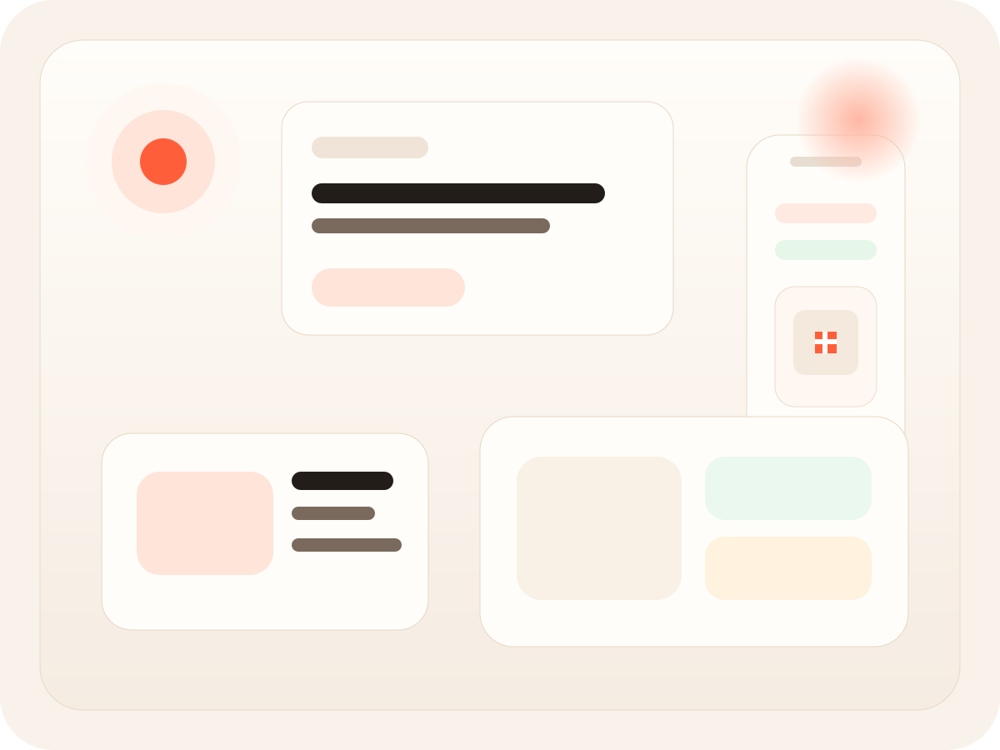
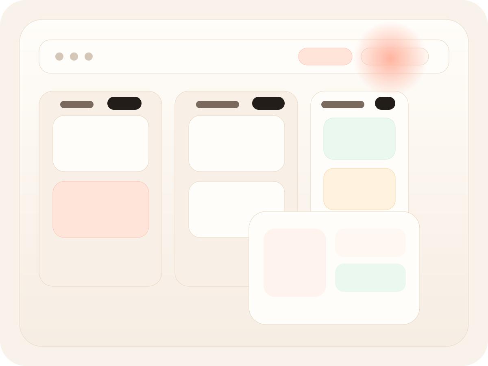

Para restaurantes, bares y cafeterias
Mozzo
La operacion del salon, mas clara.
Conecta la mesa, la carta y el equipo en una sola experiencia.
Mozzo ordena el pedido desde QR, simplifica el tablero del local y mantiene la carta siempre lista para vender mejor.
Mozzo Admin
Todo el salon en una sola vista
Pedidos, mesas y senales en tiempo real
En vivo
Mozzo Mesa
Mesa 07
Explorar menu
Pedis desde la mesa y seguis todo desde el celular.
Smash Burger
doble medallon, cheddar y salsa
$12.500
Negroni de la casa
listo para sumar a barra
$8.200
Llamar al mozo
Pedir la cuenta
Mi pedido
3 items listos para confirmar
Que hace Mozzo
Se entiende rapido porque muestra exactamente lo que resuelve.
Menos discurso, mas claridad: que ve la mesa, que ve el local y como se conecta todo.

Experiencia de mesa
Escanear, mirar la carta, pedir y llamar al mozo desde un flujo simple.

Operacion clara
El equipo ve pedidos, estados y senales sin saltar entre pantallas.
Pedidos por QR
La mesa entra al menu, arma el pedido y pide asistencia sin friccion.
Tablero en tiempo real
Pedidos nuevos, estados, mozo y cuenta organizados en una sola vista.
Menu editable
Publicas versiones nuevas e incluso podes importar el menu desde fotos.
Recorrido
Tres pasos para entender el producto.
La mesa escanea
Entra directo al menu correcto sin app ni espera.
El pedido entra
La orden, el mozo o la cuenta aparecen enseguida en el tablero.
El local opera mejor
Menos ruido, menos idas y vueltas y una experiencia mas prolija.
Demo comercial
Un sitio mas liviano y un producto mas facil de vender.
Mozzo se presenta mejor cuando la historia es clara: la mesa pide, el local ve y la operacion fluye.
Ideal para presentar el producto
en reuniones comerciales, preventa o demos con restaurantes y bares.